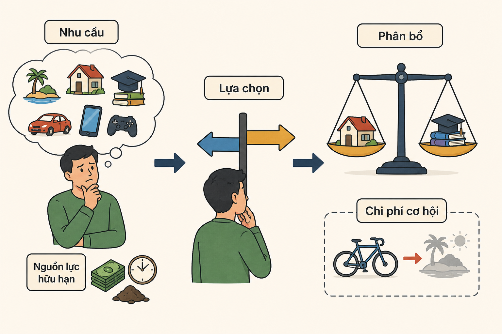

Khan hiếm là điểm xuất phát của kinh tế học

Kinh tế học bắt đầu từ một thực tế rất đơn giản nhưng không thể thay đổi: nguồn lực là hữu hạn, trong khi nhu cầu của con người là vô hạn.
Chính sự “khan hiếm” này buộc con người phải lựa chọn, và từ đó hình thành nên toàn bộ các vấn đề kinh tế.
“Khan hiếm” không có nghĩa là không có gì, mà là không có đủ để đáp ứng mọi mong muốn cùng lúc. Thời gian, tiền bạc, đất đai, năng lượng hay thậm chí là sự chú ý của con người đều là những nguồn lực khan hiếm. Vì vậy, mỗi khi sử dụng một nguồn lực cho mục đích này, ta phải từ bỏ cơ hội sử dụng nó cho mục đích khác.
Chính vì khan hiếm, con người phải đưa ra lựa chọn. Một sinh viên phải quyết định dành thời gian học hay đi làm thêm. Một gia đình cân nhắc giữa việc mua nhà hay đầu tư kinh doanh. Một quốc gia phải lựa chọn phân bổ ngân sách cho giáo dục, y tế hay quốc phòng. Mỗi lựa chọn đều đi kèm với đánh đổi, và đó là trung tâm của tư duy kinh tế.
Khan hiếm cũng là lý do khiến thị trường tồn tại. Khi nguồn lực có hạn, giá cả trở thành công cụ giúp phân bổ chúng. Những hàng hóa khan hiếm hơn thường có giá cao hơn, qua đó hạn chế nhu cầu và khuyến khích sản xuất. Ngược lại, nếu một thứ trở nên dồi dào, giá của nó sẽ giảm.
Không chỉ vậy, khan hiếm còn thúc đẩy sáng tạo và phát triển. Khi tài nguyên hạn chế, con người tìm cách sử dụng hiệu quả hơn, phát minh công nghệ mới hoặc thay thế bằng nguồn lực khác. Ví dụ, sự khan hiếm năng lượng truyền thống đã thúc đẩy sự phát triển của năng lượng tái tạo.
Tuy nhiên, khan hiếm cũng đặt ra những thách thức lớn về công bằng và phân phối. Ai sẽ được sử dụng nguồn lực? Phân bổ như thế nào là hợp lý? Đây là những câu hỏi quan trọng mà kinh tế học và chính sách công phải giải quyết.
Tóm lại, khan hiếm không chỉ là một khái niệm, mà là nền tảng của toàn bộ kinh tế học. Chính vì không có đủ cho tất cả mọi thứ, con người mới phải lựa chọn, hợp tác và tìm cách sử dụng nguồn lực một cách hiệu quả nhất.